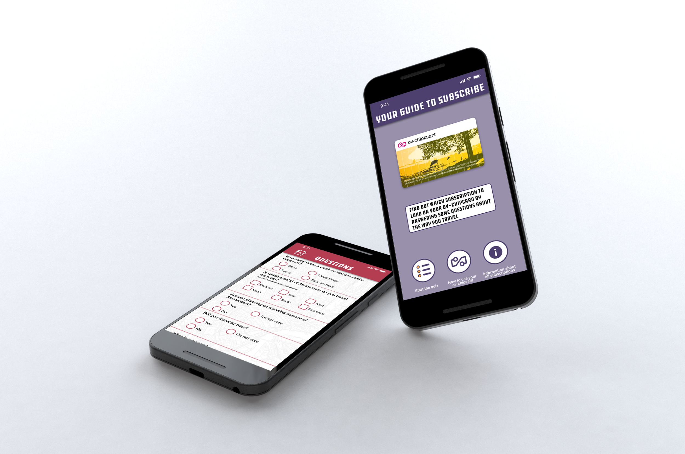

Eerste hulp als je problemen hebt met het vinden vaan een restaurant in Bali.
Jaar: 2018
Vak: Project Individueel
Categorie: Prototyping, Concepting
Voor dit project had ik de opdracht gekregen om een small screen webapplicatie tee maken die aansluit bij de Internationale Student Guide Amsterdam 2018/2019. Dit is een gids gemaakt voor internationale studenten die in Amsterdam komen studeren. Het bevat nuttige informatie over de stad en zorgt ervoor dat de studenten snel hun weg kunnen vinden. Het is een fysiek boekje en je moet er een digitale compagnon voor ontwerpen die ook online komt te staan en gemaakt is door middel van HTML en CSS.
Your Guide To Subscribe is een applicatie die internationale studenten kunnen gebruiken om te kijken welk OV abonnement het beste past bij hun reisstijl. Dit doe je door een kleine quiz in te vullen. Ook is er handige informatie te vinden
Bekijk mijn ontwerp